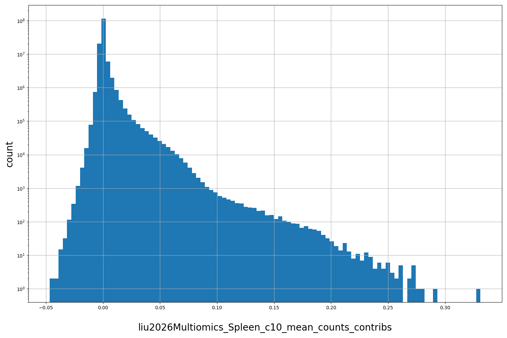

Resource
| Id | summary/liu2026Multiomics/bigwig/Spleen/c10/mean_counts_contribs |
|---|---|
| Type | position_score |
| Version | 0 |
| Summary |
mean_counts_contribs for Spleen for cell cluster c10
|
| Description |
Downloaded from: https://zenodo.org/records/15066651. Description of the data and download instructions can be found https://github.com/GreenleafLab/HDMA/blob/main/DATA.md |
| Labels |
|
Scores (1)
| ID | Type | Default annotation | Description | Histogram | Range |
|---|---|---|---|---|---|
| liu2026Multiomics_Spleen_c10_mean_counts_contribs | float |
liu2026Multiomics_Spleen_c10_mean_counts_contribs |
base-resolution contribution scores for the counts head of ChromBPNet as computed by DeepLIFT
|
 |
[-0.0467, 0.331] |
Files
| Filename | Size | md5 |
|---|---|---|
| Spleen_c10__mean_counts_contribs.bw | 899.59 MB | 899b87ab83d8ed15b83c8bcdcab8beb0 |
| Spleen_c10__mean_counts_contribs.bw.dvc | 120.0 B | b9920c387daf128f06424179c352db37 |
| genomic_resource.yaml | 1.09 KB | cf2114f245ecfd7de792dc86073458f2 |
| statistics/ |